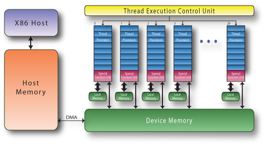

Using a GPU as an Accelerator
Using a GPU as an Accelerator
GPUs for 3D graphics
- 3D graphics rendering involves lots of operations on 3 and 4 dimensional vectors
- positions of vertices (x, y, z)
- colour and transparency of pixels (RGBA)
- Realtime graphics rendering needs to be fast so accuracy is often sacrificed
- GPUs are good at 32-bit integer and single precision floating point arithmetic
- not as good at 64-bit integer and double precision floating point
- 3D graphics operations are independent of one another
- and can be performed in parallel
GPUs as multicore vector processors
- Multicore vector processors.
- Much faster memory access to their own memory
- Slow transfer between host and device (~5GB/s)
- Constrained and complex access to different types of device memory
- SIMD: Single Instruction, Multiple Data
| No of threads |
<10 |
1000s |
| SIMD width |
256 bits |
1024 bits |
| Memory bandwidth |
<25 GB/s |
<500 GB/s |
GPU Hardware
- Each core (multiprocessor - often abbreviated as "SM" or "MP") has:
- 128 Single Precision Floating Point Units
- 32 Double Precision FPUs (that also perform single precision transcendental functions)
- 16384 32-bit registers (very fast access)
- 64KB of "shared" cache memory (fast access)
- 10KB of "constant" cache memory (writable by the CPU, fast, read-only access by the GPU)
- GPUs also have "global" memory which is the figure quoted by graphics card manufacturers (2GB, etc.)
- accessed by the CPU across the PCI-Express bus
- high latency, slow access by the GPU (but still up to 20x faster than CPU RAM access)
General Purpose Programming for GPUs
- Threads are organised in groups of 32 called "warps"
- Threads also organised "Thread blocks" of several warps
- "Thread blocks" are organised in 1-d, 2-d, or 4-d grids
- "Thread blocks" are assigned to Streaming Multiprocessors
- A GPU cards is contains 1-50 Streaming Multiprocessor
GPU Architecture

See more
SIMT
- Threads within a block have access to the same "shared" memory
- Threads within a block can synchronise
- No communication or synchronisation primitives across blocks/SMs
- can use atomic operations on variables in global memory (slow)
- This type of programming is a hybrid between threaded programming and SIMD and hence is called SIMT by Nvidia
Executing code on the GPU
- Functions executed on the GPU and called from the CPU are called "kernels"
- kernel execution is asynchronous to the CPU
- CPU must call a function which blocks until the GPU has finished executing the current kernel before attempting to download results
- there is an implicit synchronisation barrier on the GPU at the start of each kernel
- Common programming pattern:
- upload data from CPU RAM to GPU global memory (slow)
- execute kernel(s) on GPU (fast)
- synchronise
- download results (slow)
GPU-accelerating your code
- Four options to GPU accelerate code:
- replace existing libraries with GPU-accelerated ones (ArrayFire, cuFFT, cuBLAS, Magma, ...)
- use compiler directives to automatically generate GPU-accelerated portions of code (OpenMP 4.5, OpenACC)
- use CUDA::Thrust C++ template library to build your own kernels
- write your own kernels in CUDA-C